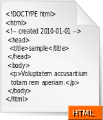
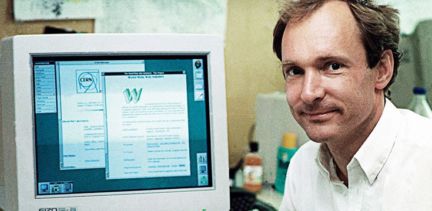

Hyper Text Markup Language (HTML) adalah sebuah bahasa markah yang digunakan untuk membuat sebuah halaman web, menampilkan berbagai informasi di dalam sebuah penjelajah web Internet dan pemformatan hiperteks sederhana yang ditulis dalam berkas format ASCII agar dapat menghasilkan tampilan wujud yang terintegerasi. Dengan kata lain, berkas yang dibuat dalam perangkat lunak pengolah kata dan disimpan dalam format ASCII normal sehingga menjadi halaman web dengan perintah-perintah HTML. Bermula dari sebuah bahasa yang sebelumnya banyak digunakan di dunia penerbitan dan percetakan yang disebut dengan SGML (Standard Generalized Markup Language), HTML adalah sebuah standar yang digunakan secara luas untuk menampilkan halaman web. HTML saat ini merupakan standar Internet yang didefinisikan dan dikendalikan penggunaannya oleh World Wide Web Consortium (W3C). HTML dibuat oleh kolaborasi Caillau TIM dengan Berners-lee Robert ketika mereka bekerja di CERN pada tahun 1989 (CERN adalah lembaga penelitian fisika energi tinggi di Jenewa).
Pada tahun 1980 seorang ahli fisika, Tim Berners-Lee, dan juga seorang kontraktor di CERN (Organisasi Eropa untuk Riset Nuklir) mengusulkan dan menyusun ENQUIRE, sebuah sistem untuk ilmuwan CERN dalam membagi dokumen. Sembilan tahun kemudian, Berners-Lee mengusulkan adanya sistem markah berbasis internet.Berners-Lee menspesifikasikan HTML dan menulis jaringan beserta perangkat lunaknya di akhir 1990. Pada tahun yang sama, Berners-Lee dan Robert Cailliau, insinyur sistem data CERN berkolaborasi dalam sebuah permintaan untuk pendanaan, namun tidak diterima secara resmi oleh CERN. Di catatan pribadinya sejak 1990 dia mendaftar "beberapa dari banyak daerah yang menggunakan hypertext" dan pertama-tama menempatkan sebuah ensiklopedia.
Penjelasan pertama yang dibagi untuk umum dari HTML adalah sebuah dokumen yang disebut "Tanda HTML", pertama kali disebutkan di Internet oleh Tim Berners-Lee pada akhir 1991. Tanda ini menggambarkan 18 elemen awal mula, versi sederhana dari HTML. Kecuali untuk tag hyperlink, yang sangat dipengaruhi oleh SGMLguid, in-house Standard Generalized Markup Language (SGML) berbasis format dokumen di CERN. Sebelas elemen ini masih ada di HTML 4.
 HTML adalah bahasa markah yang digunakan peramban untuk menafsirkan dan menulis teks, gambar dan bahan lainnya ke dalam halaman web secara visual maupun suara. Karakteristik dasar untuk setiap item dari markah HTML didefinisikan di dalam peramban, dan karakteristik ini dapat diubah atau ditingkatkan dengan menggunakan tambahan halaman web desainer CSS. Banyak elemen teks ditemukan di laporan teknis ISO pada tahun 1988 TR 9537 Teknik untuk menggunakan SGML, yang pada gilirannya meliputi fitur bahasa format teks awal seperti yang digunakan oleh komandan RUNOFF dikembangkan pada awal 1960-an untuk sistem operasi: perintah-perintah format ini berasal dari perintah yang digunakan oleh pengetik untuk memformat dokumen CTSS secara manual. Namun, konsep SGML dari markah umum didasarkan pada unsur-unsur daripada hanya efek cetak, dengan pemisahan struktur dan markah juga; HTML telah semakin bergerak ke arah ini dengan CSS.
HTML 3.2dipublikasikan sebagai Konsorsium World Wide Web. Versi ini merupakan versi pertama yang dikembangkan dan distandarisasi secara khusus oleh Konsorsium World Wide Web, sebagaimana IETF sudah menutup kelompok kerja HTMLnya pada 12 September, 1996.
Pada awalnya disebut "Wilbur", HTML 3.2 menghilangkan rumus matematika sama sekali yang sedang berkonsiliasi atas kasus tumpang tindih antara berbagai kepemilikan dan mengadopsi sebagian besar tanda markah visual dari Netscape. Elemen kedip dari Netscape dan elemen marquee besutan Microsoft dihilangkan karena kesepakatan bersama antara kedua perusahaan.[11] Sebuah markup untuk rumus matematika serupa dengan yang ada dalam HTML tidak memiliki standar sampai 14 bulan kemudian di MathML.
Cascading Style Sheet (CSS) merupakan aturan untuk mengatur beberapa komponen dalam sebuah web sehingga akan lebih terstruktur dan seragam. CSS bukan merupakan bahasa pemograman.
Sama halnya styles dalam aplikasi pengolahan kata seperti Microsoft Word yang dapat mengatur beberapa style, misalnya heading, subbab, bodytext, footer, images, dan style lainnya untuk dapat digunakan bersama-sama dalam beberapa berkas (file). Pada umumnya CSS dipakai untuk memformat tampilan halaman web yang dibuat dengan bahasa HTML dan XHTML.
CSS dapat mengendalikan ukuran gambar, warna bagian tubuh pada teks, warna tabel, ukuran border, warna border, warna hyperlink, warna mouse over, spasi antar paragraf, spasi antar teks, margin kiri, kanan, atas, bawah, dan parameter lainnya. CSS adalah bahasa style sheet yang digunakan untuk mengatur tampilan dokumen. Dengan adanya CSS memungkinkan kita untuk menampilkan halaman yang sama dengan format yang berbeda.
Nama CSS didapat dari fakta bahwa setiap deklarasi style yang berbeda dapat diletakkan secara berurutan, yang kemudian membentuk hubungan ayah-anak (parent-child) pada setiap style. CSS sendiri merupakan sebuah teknologi internet yang direkomendasikan oleh World Wide Web Consortium atau W3C pada tahun 1996. Setelah CSS distandardisasikan, Internet Explorer dan Netscape melepas browser terbaru mereka yang telah sesuai atau paling tidak hampir mendekati dengan standar CSS.
Untuk saat ini terdapat tiga versi CSS, yaitu CSS1, CSS2, dan CSS3. CSS1 dikembangkan berpusat pada pemformatan dokumen HTML, CSS2 dikembangkan untuk memenuhi kebutuhan terhadap format dokumen agar bisa ditampilkan di printer, sedangkan CSS3 adalah versi terbaru dari CSS yang mampu melakukan banyak hal dalam desain website. CSS2 mendukung penentuan posisi konten, downloadable, huruf font, tampilan pada tabel /table layout dan media tipe untuk printer. Kehadiran versi CSS yang kedua diharapkan lebih baik dari versi pertama dan kedua.
CSS3 juga dapat melakukan animasi pada halaman website, di antaranya animasi warna hingga animasi 3D. Dengan CSS3 desainer lebih dimudahkan dalam hal kompatibilitas websitenya pada smartphone dengan dukungan fitur baru yakni media query. Selain itu, banyak fitur baru pada CSS3 seperti: multiple background, border-radius, drop-shadow, border-image, CSS Math, dan CSS Object Model